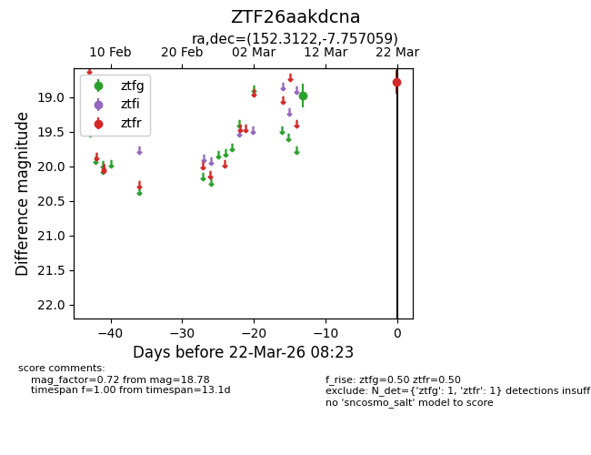
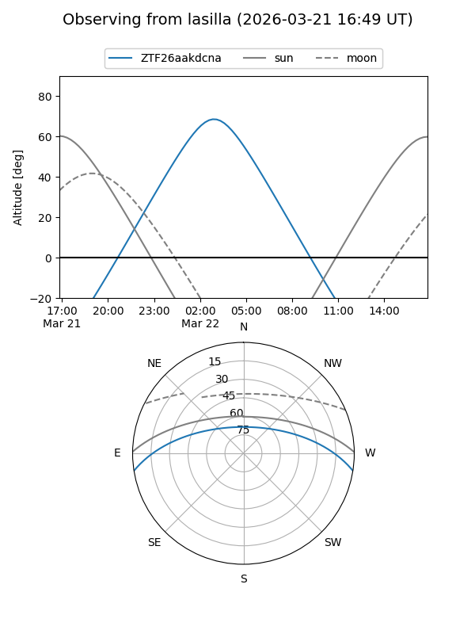
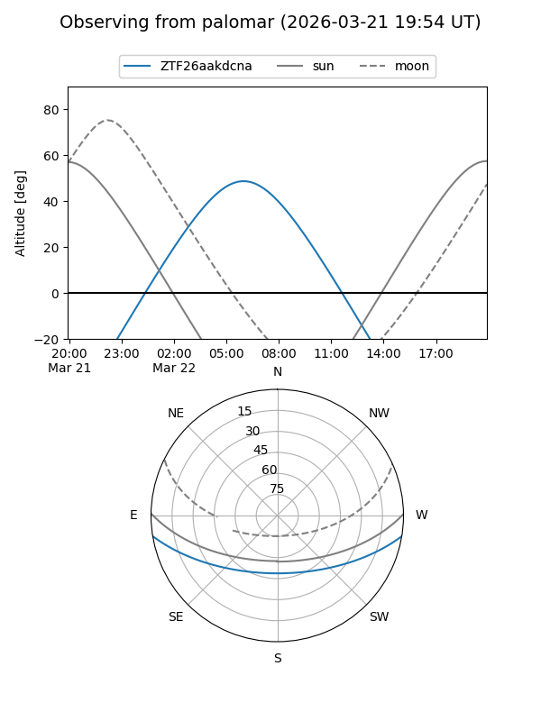

ZTF26aakdcna
Target ZTF26aakdcna at 2026-03-22 08:25
Aliases and brokers:
FINK: link
Lasair: link
ALeRCE: link
alt names
ZTF26aakdcna (ztf,fink_ztf)
Coordinates:
equatorial (ra, dec) = 152.3122,-7.75706
equatorial (HMS+DMS) = 10:09:14.92,-07:45:25.41
galactic (l, b) = (248.6665,+37.48408)
Flags:
Photometry:
last ztfg=18.98, ztfr=18.78
1 ztfg, 1 ztfr detections
Lightcurve

Visibility


Additional plots